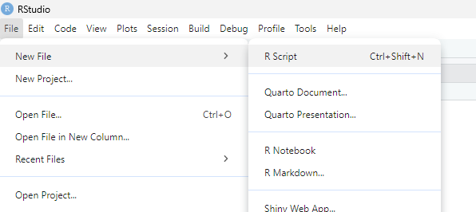
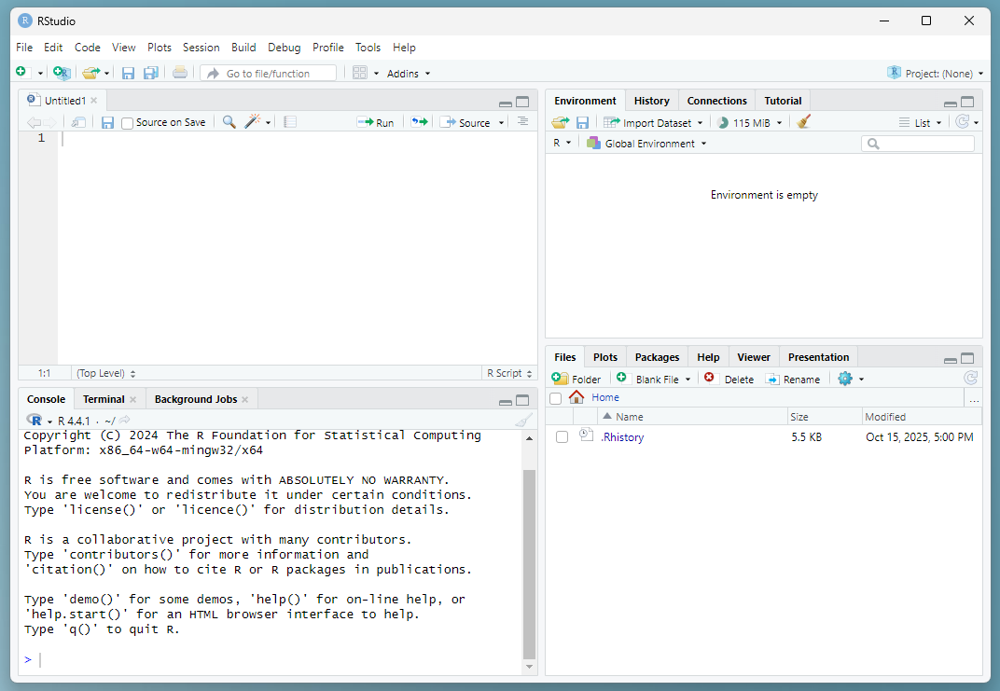
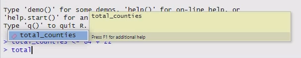
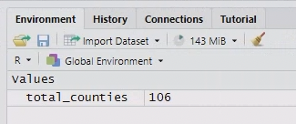

7 Working with R and RStudio
7.1 Accessing the LEC R server
For your Lancaster University modules, the best way to access R and RStudio is through the LEC R server.
The LEC R server is accessed through a browser window. You will not need to download any software, and it will work on any device.
The LEC R server can be found at the following link: https://lec-rstudio.lancaster.ac.uk.
7.1.1 On campus
If you are on campus and using Lancaster University internet, you will be able to connect directly to the R server.
7.1.2 Off campus
If you are off campus (and therefore not using Lancaster University internet), you will need to use the Global Protect VPN, which allows you to access some services and IT as if you were physically located on campus. There are instructions for how to set up the VPN on your personal computer at: https://portal.lancaster.ac.uk/ask/vpn/.
If you are someone who enjoys and feels confident using open source software, you can also install R and RStudio on your personal computer.
You will need to download and install R first, and then RStudio second. Use the links above and follow the directions on the websites. Make sure you select the right software versions for your operating system.
When you are running the software on your computer, RStudio will communicate with and use R for you - you do not have to run R separately.
7.2 The RStudio interface
If you haven’t done so yet, open the LEC R server in a browser window.
Before we do anything else, click on File > New File > R Script to create a new R script. This should open up a new panel in your window.

Now the RStudio window should be divided into four quadrants:
- Top left: Code files - where you can see and edit your saved code files (called “scripts”), including this R markdown document. Some types of data can also be viewed here.
-
Bottom left:
Console- where you can input commands and see code that has been run. This is also where text-based output gets printed if you are using a regular R script instead of an R markdown file. -
Top right:
Environment- where you can see the saved data objects in your current R workspace. -
Bottom right: This has several useful tabs:
Files- which shows all the files on your server account;Help- where you can look up documentation about specific commands; andPlots- where images appear if you are using a regular R script instead of an R markdown file. (Ours will appear inside the code file instead.)
Most of the time when work you in R, you’ll type your code into a script file.

Warning! Although you can run code from both the script pane (top left) and console pane (bottom left), there is a big difference between them!!!
- If you type something into the script pane you can run it multiple times and save it for future use.
- If you type something into the console pane, it will run once and then disappear.
So make sure that you are typing your code into the right location!
This will almost always be a script file, not the console.
7.3 The building blocks of code
To help us talk about coding, we need to learn some vocabulary. Five essential building blocks of any coding language are:
- Operators
- Variables
- Functions
- Arguments
- Comments
We’ll learn about each of them and practice typing some code into the Console and running it from there.
7.3.1 Operators
Operators are typically 1 or 2-character commands that correspond to very simple, common tasks.
For instance, all of the basic mathematical symbols are operators in most programming languages, e.g., + (addition), - (subtraction), * (multiplication), and / (division). In R, exponents can be expressed with either the caret, ^, or a double asterisk, **.
Thus, like Excel, R can function as a basic calculator.
Type 84 + 22 directly into the Console (bottom left quadrant, labeled “Console”) and hit Enter.
84 + 22
#> [1] 1067.3.2 Variables / Objects
Data can be saved as named variables, which allows you to refer to and use them later. In R these are usually called objects since the word “variable” is frequently used in the statistical sense instead. You can think of variables as analogous to nouns.
- In R, we use the arrow operator
<-to save objects. - We can save the output from our command above using the following code:
total_counties <- 84 + 22. - Then whenever we use the object
total_counties, R will substitute the value106.
Create and store an object by typing total_counties <- 84 + 22 into the Console and hit Enter. Now type total_counties and hit Enter.
total_counties <- 84 + 22
total_counties
#> [1] 106Tip: As you type, RStudio will suggest objects that are stored in your environment that start with the same characters.
You can either:
- click on them
- Use the arrow keys + Enter to select them.
This will save you time and also prevent typos from causing bugs!

Now you should be able to see the total_counties object in your Environment panel.

7.3.3 Functions
Functions are the commands that tell the program to do something. You can think of them as the verbs of a programming language. Functions are always followed by a set of brackets.
For example, the function getwd() will provide your current working directory (the location where R will read and save files).
Type the function getwd() into the Console and hit Enter. (Your output will look different than mine, because I’m using a different computer.)
getwd()
#> [1] "/home/runner/work/LECFoundationsBookdown/LECFoundationsBookdown"Info: As you type the command getwd(), RStudio will automatically add the ending bracket when you type the starting bracket. (You will see later that it also does the same thing with quotation marks.)
This helps avoid introducing bugs from forgetting to close your brackets.
7.3.4 Arguments
Most functions also take inputs called arguments that go inside the parentheses. Arguments are generally either:
- Data to process
- Settings that tell the function how to process the data
For example, the function sqrt(x) takes one argument, x, and calculates its square root.
Type sqrt(4) into the Console and hit Enter.
sqrt(4)
#> [1] 2One operator that can be useful for getting arguments into functions in R is the pipe operator: |>
The pipe operator passes data to the first argument of the next function. (You’ll see why this is useful later.)
For now, type 9 |> sqrt() into the Console and hit Enter.
9 |> sqrt()
#> [1] 37.4 Running code from a script
Now that you’ve run some basic code via the Console, we’re going to learn how to do it from a script file.
Almost all of the time that you are running code, you will do it from a script.
Info: Running code from a script file, instead of from the Console, has several benefits:
- Everything you’ve done is clearly documented.
- You can re-run any part of your code if needed.
- You can save your code to refer to or repeat again later.
- Your analysis can be easily shared with and repeated by someone else.
These are some of the core reasons for using a coding-based statistics tool - it makes your analyses transparent and reproducible.
7.4.1 Two methods for running code
There are two methods to run bits of code from a script.
- Press
Ctrl + Enter - Click the
Runbutton with the green arrow near the top right of the script panel
For both methods, you can either move your cursor to a specific line of code to run just that line, or highlight a larger portion of code to run the whole selection.
You can also run an entire script using the source button with the blue arrow to the right of the Run button.
Type the following code into your R script file. Run the code using all three methods.
- First practice running each line separately, and watch what happens in the console after each command.
- Then try running all the lines at once, using highlighting and using the
sourcebutton.
(Note: I’ve turned off the results in the code chunk below, so all you can see is the code itself.)
Info: Copying and pasting code from the instructions can be faster, but typing the code out yourself will make it easier to learn and remember what you are doing.
I recommend typing code out whenever we are learning something in these practicals, but then copying and pasting when you are doing the analysis for your coursework later on.
# Random practice code
a <- 3
b <- 5
a + b
a^2
b * a
b**a
1:5
y <- c(2, 4, 6, 8, 10)
y
z <- b/a
z
z <- "Lancaster"
zTips!
Two important bits of R syntax (syntax = rules for how a language works):
- The colon operator tells R to list out every integer number between A and B, when written as
A:B. - The small letter
c(short for the term “concatenate”) is used to group data together.
In both cases above, the output is an object called a vector.
You can think of a vector like a list of data (although the word list actually specifically refers to a specific type of data object in R that we aren’t using).
We’ll use both of these operations later in this practical.
Q: What happens to the variable z when you run the second-to-last line of code? Why might that be a problem?
7.5 Fixing common mistakes
7.5.1 Error messages
Being able to interpret error messages to fix your mistakes is an important part of coding.
The red text may seem scary, but usually it will contain a good clue to help you with debugging your code.
Type the following bits of code into the Console and see if you can figure out what the problem is for each of the very common mistakes below based on the error message.
sqrt()
Lancaster + 5"Lancaster" + 5 Tip: If you want to make something character-type data, put it in quotation marks. Otherwise R will assume that it is referring to a saved variable.
7.5.2 Why am I seeing plus signs?
If you give R instructions (in the form of code), R will wait until it thinks the instructions are complete before it allows you to do anything else.
Sometimes errors in your code (often an unmatched bracket) will mean that you think you have written a complete set of instructions, but R is still waiting for more (e.g. a closing bracket).
When this happens, you will see + in the Console instead of >. This indicates that R thinks that there’s still more code to come.
Tip: If R gets stuck in unfinished code and the Console has + at the start of the line, hit Esc to exit the current task.
Practice getting stuck with R waiting for more code and then using Esc to get out of it by running the incomplete function below.
7.5.3 Getting help from R documentation
Sometimes a function is not working and you can’t immediately see why. Luckily R stores documentation for (nearly) all its functions directly for you to refer to!
Type the following code into your R console and run it.
?sqrtThis should bring up a help page that outlines the function, what it does, and how to use it.
It also lists what arguments a function expects and what to put in them.
You can also search for functions in the Help tab’s search bar.
Search for read.csv in the Help tab and skim the documentation quickly.
Tip: Within this website, you’ll see that some function names are automatically converted to links e.g. mean(). You can click on these and it will take you to a web version of the internal help page for that function!
7.6 Loading packages
Before we can continue, we will need to load some packages.
A package is a set of extra functions that are not part of the basic R installation but can be added on later. You can think of them like apps that enhance R.
Today we will be using three packages that are all part of what’s called the tidyverse, a philosophy/approach for coding in R. They are:
-
dplyr- a data manipulation package. -
tidyr- a package for helping you clean and reshape messy data. -
ggplot2- a package for plotting.
Warning: If you start working on the desktop version of R and RStudio (i.e. with the software downloaded and installed on your personal computer) you will also need to install the packages by going to Tools > Install Package and then typing the names of the packages.
However, these packages are already installed on the LEC R server.
7.6.1 The library() function
You generally load packages using the library() function.
At the very top of your script, use the enter key to make some extra line spaces. Then type and run the following code.
There will be some output in the Console that you can ignore.
7.3.5 Comments
Comments are another critical part of coding, although not part of the code itself. Comments explain what the code is doing, and are a crucial part of making your code understandable to both other people and to yourself. (Every programmer hates the feeling of going back to old code days/weeks/months/years after you first wrote it and thinking “What the #$&! was I doing here????” Commenting your code properly makes your life much easier.)
#.#symbol tells R to ignore whatever else follows on that line in the script (i.e. not interpret it as code).Type the statement
# Hello world!into the Console and hit Enter.There will be no output - because you’ve told R to ignore your input.